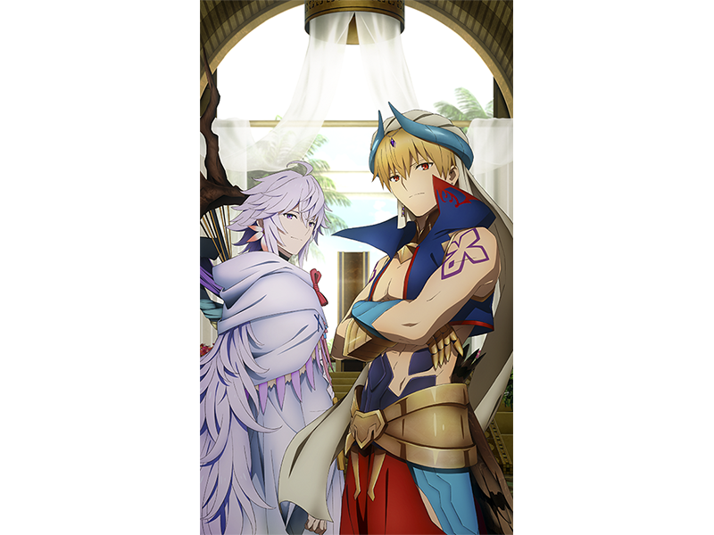

感謝您使用「Fate/Grand Order」。
2020年1月12日(日)在「Fate/Grand Order Chaldea Park Caravan 2019-2020」愛知會場舉辦的「FGO特別談話 in 愛知」，發表了有關智慧型手機FateRPG「Fate/Grand Order」為首的FGO PROJECT及Fate系列的新情報。
以下介紹一部份新情報。
◆為了記念「Fate/Grand Order Chaldea Park Caravan 2019-2020」愛知會場的舉辦贈送聖晶石10個！◆
為了記念「Fate/Grand Order Chaldea Park Caravan 2019-2020」愛知會場的舉辦，向2020年1月13日(一) 2:59前通過「特異點F 炎上汙染都市 冬木」的御主贈送聖晶石10個。
＞＞詳情請確認此處的公告。
◆贈送聖晶石6個做為3萬轉推達成報酬！◆
由於在「FGO特別談話 in 愛知」内進行的Twitter宣傳活動達成3萬轉推，贈送聖晶石6個。
＞＞詳情請確認此處的公告。
◆期間限定活動「拯救！ 亞馬遜.com ～CEO危機2020～」預定舉辦！◆
發表了自2020年1月下旬舉辦期間限定活動期間限定活動「拯救！ 亞馬遜.com ～CEO危機2020～」。
＞＞詳情請確認此處的公告。
◆『TV動畫「Fate/Grand Order -絕對魔獸戰線巴比倫尼亞-」放送記念宣傳活動 第3彈』舉辦預定！◆
發表了為了記念TV動畫「Fate/Grand Order -絕對魔獸戰線巴比倫尼亞-」的放送，自2020年1月18日(六) 17:00(預定)舉辦『TV動畫「Fate/Grand Order -絕對魔獸戰線巴比倫尼亞-」放送記念宣傳活動 第3彈』。
■【期間限定】宣傳活動限定的新魔術禮裝登場！

■「第七特異點」關聯從者以期間限定在支援從者登場！
■新概念禮裝的插圖公開！

■TV動畫「Fate/Grand Order -絕對魔獸戰線巴比倫尼亞-」放送記念特別登入獎勵！
在期間中以8天內的登入贈送宣傳活動限定的概念禮裝1張與聖晶石12個、新魔術禮裝「第五真說要素環境用迦勒底制服」！
舉辦期間:2020年1月18日(六) 17:00(預定)～3月31日(二) 22:59
詳情請在日後刊載的公告確認。
◆第5次 Fate/Grand Order 玩家問卷的實施公告◆

以提升服務為目的實施第5次 Fate/Grand Order 玩家問卷。
■問卷回答期間
回答期間:2020年1月12日(日)～1月31日(五) 11:59
※如果回答填寫中期間結束，將無法送出。敬請原諒。
■贈送對象者
上述期間中完成回答，顯示回答完成頁面的玩家
■贈送內容
呼符 4張
＞＞詳情請確認此處的公告。
其他線下活動及週邊請參考原公告。
今後也請多多指教「Fate/Grand Order」。